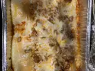

Lasagna

Description of Lasagna
Lasagna is a pasta in form of sheets or wide strips,also an Italian dish.
Ingredients
- Beef:You can use ground turkey for lighter option.
- Spaghetti sauce:Use store-bought or homemade spaghetti sauce.
- Cheeses: You will need cottage cheese, mozzarella, and Parmesan.
- Eggs: Eggs help bind the cheese mixture together. Plus, they lend moisture and richness.
- Seasonings: Season the easy lasagna with dried parsley, salt, and black pepper.
- Lasagna noodles: Of course, you will need lasagna noodles!
- Water: Pour ½ cup of water around the edges of the baking dish before baking.
Steps
- Cook and drain the ground beef, then stir in the spaghetti sauce and simmer.
- Combine the cottage cheese, 2 cups of mozzarella, eggs, half of the Parmesan, and seasonings.
- Assemble the lasagna according to the detailed recipe.
- Bake, covered, for 45 minutes.
- Uncover and continue baking for 10 minutes.